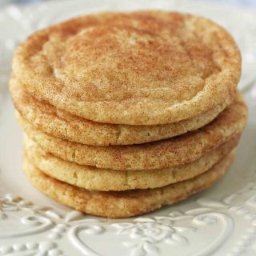

Description
Do you love cookies that are basically just butter rolled in sugar? When you eat cookie dough, do you want a single note: Just Butter? These are the cookies for you!
Ingredients
- 1 cup Unsalted Butter (softened)
- 1 ½ cups Sugar
- 2 large Eggs
- 2 teaspoons Vanilla
- 2 ¾ cup Flour
- 1 ½ teaspoon Cream of Tartar
- ½ teaspoon Baking Soda
- 1 teaspoon Salt
Cinnamon-Sugar Mixture
- ¼ cup Sugar
- 1 ½ Tablespoons Cinnamon
Steps
- Preheat oven to 350 degrees.
- In a large mixing bowl, cream butter and sugar for 4-5 minutes until light and fluffy. Scrape the sides of the bowl and add the eggs and vanilla. Cream for 1-2 minutes longer.
- Stir in flour, cream of tartar, baking soda, and salt, just until combined.
- In a small bowl, stir together sugar and cinnamon.
- If time allows, wrap the dough and let refrigerate for 20-30 minutes. Roll into small balls until round and smooth. Drop into the cinnamon-sugar mixture and coat well. Using a spoon, coat for a second time, ensuring the cookie balls are completely covered. *To make flatter snickerdoodles, press down in the center of the ball before placing in the oven. This helps to keep them from puffing up in the middle.
- Place on a parchment paper-lined baking sheet. Bake for 9-11 minutes. Let cool for several minutes on baking sheet before removing from the pan.
Recipe from Modern Honey.
Return to top.
Return to home.